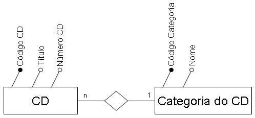
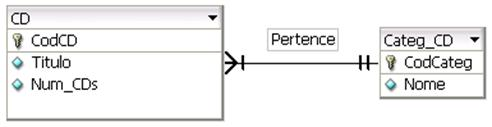
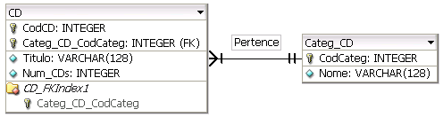

Um banco de dados é uma coleção organizada de informações - ou dados - estruturadas, normalmente armazenadas eletronicamente em um sistema de computador. Um banco de dados é geralmente controlado por um sistema de gerenciamento de banco de dados (DBMS). Juntos, os dados e o DBMS, juntamente com os aplicativos associados a eles, são chamados de sistema de banco de dados, geralmente abreviados para apenas banco de dados. Os dados nos tipos mais comuns de bancos de dados em operação atualmente são modelados em linhas e colunas em uma série de tabelas para tornar o processamento e a consulta de dados eficientes. Os dados podem ser facilmente acessados, gerenciados, modificados, atualizados, controlados e organizados. A maioria dos bancos de dados usa a linguagem de consulta estruturada (SQL) para escrever e consultar dados.
SQL é uma linguagem de programação usada por quase todos os bancos de dados relacionais para consultar, manipular e definir dados e fornecer controle de acesso. O SQL foi desenvolvido pela primeira vez na IBM nos anos 1970, com a Oracle como principal contribuinte, o que levou à implementação do padrão SQL ANSI; o SQL estimulou muitas extensões de empresas como IBM, Oracle e Microsoft. Embora o SQL ainda seja amplamente usado hoje em dia, novas linguagens de programação estão começando a aparecer.
O Modelo Entidade Relacionamento (também chamado Modelo ER, ou simplesmente MER), como o nome sugere, é um modelo conceitual utilizado na Engenharia de Software para descrever os objetos (entidades) envolvidos em um domínio de negócios, com suas características (atributos) e como elas se relacionam entre si (relacionamentos). Em geral, este modelo representa de forma abstrata a estrutura que possuirá o banco de dados da aplicação. Obviamente, o banco de dados poderá conter várias outras entidades, tais como chaves e tabelas intermediárias, que podem só fazer sentido no contexto de bases de dados relacionais.
Um Modelo Conceitual é a representação escrita ou gráfica da situação ambiental da área onde, por meio dos dados obtidos, são formuladas hipóteses sobre as características da fonte de contaminação, as prováveis vias de transporte dos contaminantes (meios onde pode se propagar), a distribuição espacial da contaminação e os prováveis receptores ou bens a proteger. Tem como objetivo identificar as ações prioritárias e necessárias para o adequado gerenciamento ambiental do site na questão de áreas contaminadas.
Um modelo de dados lógico estabelece a estrutura dos elementos de dados e os relacionamentos entre eles. É independente do banco de dados físico que detalha como os dados serão implementados. O modelo de dados lógicos serve como um modelo para os dados usados. O modelo de dados lógico leva os elementos de modelagem de dados conceituais um passo adiante, adicionando mais informações a eles.
Um modelo físico de dados introduz o contexto específico do banco de dados ausente em modelos conceituais e lógicos de dados. Ele representa as tabelas, colunas, tipos de dados, visualizações, restrições, índices e procedimentos dentro do banco de dados e/ou as informações comunicadas durante os processos de computador. Os modelos físicos de dados devem ser construídos em relação a um sistema de gerenciamento de banco de dados (SGBD) específico, assim como os requisitos específicos dos processos que operam com base nos dados. Isso muitas vezes requer desnormalização de construtos de projeto lógico para manter a integridade referencial. Um exemplo das considerações contextuais no estágio de modelagem física de dados é a natureza dos dados que podem/serão processados e as regras sobre como tais processos podem ser executados.
Na primeira fase, é construído um modelo conceitual, na forma de um diagrama entidade-relacionamento. Este modelo captura as necessidades da organização em termos de armazenamento de dados de forma independente de implementação.
A etapa de projeto lógico objetiva transformar o modelo conceitual obtido na primeira fase em um modelo lógico. O modelo lógico define como o banco de dados será implementado em um SGBD específico.
na etapa de projeto físico, o modelo do banco de dados é enriquecido com detalhes que influenciam no desempenho do banco de dados, mas não interfere em sua funcionalidade. O modelo obtido neste passo é o modelo físico do banco de dados. Este processo normalmente é chamado de sintonia (“tuning”). -> continuo.
O SQL é usado para fazer qualquer tipo de manipulação dos registros de um banco de dados. Ou seja, ele serve para criar, inserir, atualizar, excluir e consultar as informações armazenadas na base, além de outras diversas funções mais complexas. Atualmente, vários SGBDs amplamente utilizados no mercado são baseados em SQL. Isso acontece porque bancos do tipo relacional armazenam as informações em estruturas semelhantes a tabelas, permitindo que sejam criadas relações entre elas. A linguagem SQL foi criada justamente para facilitar o gerenciamento de dados armazenados em bancos que seguem esse padrão.
Alguns dos principais sistemas que utilizam essa tecnologia são:
MySQL: criado pela Oracle, é uma opção que oferece serviços gratuitos e pagos;
PostgreSQL: muito usado em aplicações web, essa é uma opção gratuita de código aberto;
Oracle: conhecido pela sua segurança, esse sistema é um dos mais usados por grandes corporações;
SQL Server: desenvolvido pela Microsoft, ele oferece tanto serviços pagos quanto versões gratuitas para download.
O comando CREATE, conforme seu nome indica, serve para criar o banco de dados e as tabelas que ele contém. A instrução usada para isso é bem simples:
Com o nosso banco criado, podemos começar a criar as tabelas em que vamos armazenar os registros. Para isso, usamos o comando CREATE TABLE, observe:
É importante observar que, ao criar a tabela, também estamos especificando as colunas que ela vai conter, os tipos de dados que cada uma vai suportar e o comprimento máximo para os campos do tipo VARCHAR.
O comando INSERT é usado para inserir novos registros em uma tabela do banco. Agora que nossa tabela “funcionarios” já foi criada, podemos usar uma estrutura básica dessa instrução para começar a popular o banco. Observe:
Nesse breve exemplo que mostramos, você deve reparar que “funcionarios” é o nome da tabela e “id”, “nome” e “cargo” são as colunas da tabela que estamos adicionando novos dados.
Já o comando UPDATE é utilizado para atualizar os registros que foram armazenados no banco. Essa declaração é usada junto com a cláusula WHERE, que especifica exatamente a linha da tabela que terá seus dados alterados.
No exemplo abaixo, adicionamos um novo registro na tabela “funcionarios”, mas agora queremos atualizar um dos dados que inserimos, mais precisamente o cargo que foi especificado. Para isso, usamos o comando:
Existem várias opções de bancos de dados disponíveis no mercado. Mas, antes de trabalharmos cada uma delas, é preciso entender a diferença entre os bancos de dados relacionais e os não relacionais. Os bancos de dados relacionais são criados no paradigma da orientação a conjuntos. Dessa forma, os dados que ali estão disponíveis serão armazenados em tabelas. Cada tabela terá atributos e linhas ou registros responsáveis por organizar essas informações. São comumente utilizados para dados tabulares, que possuem sua inserção muito mais simples e permite, também, a recuperação de forma mais prática no dia a dia. A linguagem utilizada nesse formato é de SQL, Structured Query Language. Portanto, se você quer utilizar um banco de dados relacionais, é preciso se atentar a esse detalhe
O Oracle Database é o sistema de gestão de banco de dados mais utilizado no mundo. Trabalha com a linguagem SQL, e garante a segurança e diversos recursos para seus clientes e usuários. Uma das vantagens desse modelo é a facilidade para ser instalado nas mais diversas plataformas, sendo compatível com BIM AIX, IBM VMS, Windows, Linux, Unix e HP/UX. No entanto, é interessante investir em um bom hardware para que o desempenho não seja prejudicado. Outra vantagem do Oracle é a sua documentação. Ela é extremamente detalhada e, por isso, os desenvolvedores terão muito mais conhecimento dos recursos disponíveis na plataforma.
O SQL Server, criado pela Microsoft, é muito conhecido e utilizado no mercado. A linguagem usada nessa ferramenta é o T-SQL, e oferece recursos avançados e diferenciados para facilitar a atualização de dados e o armazenamento das informações de forma segura e confiável. O SQL Server atua com sistemas integrados de criptografia, permitindo que a visualização ou alteração das informações sejam feitas apenas pelas pessoas responsáveis, o que garante ainda mais segurança e tranquilidade para os usuários e empresários.
O MySQL é um banco de dados relacional que pertence à Oracle. Uma das características mais marcantes desse modelo é o fato de se tratar de um Open Source. Utiliza a linguagem SQL e funciona com as licenças de software comercial e livre. O MySQL se destaca pelo seu fácil uso e uma estrutura de segurança e confiabilidade que permitiu que empresas e aplicativos baseados na internet utilizassem seus recursos. Dentre os principais usuários estão o Google, Facebook, Youtube, Twitter e NASA.
O custo médio de um banco de dados depende de uma série de fatores, como o seu tamanho, o tipo de servidor, a necessidade de backup e recursos adicionais. Em geral, os preços de manutenção variam de centenas a milhares de dólares por mês. Por exemplo, os bancos de dados empresariais maiores precisam de mais recursos computacionais e, portanto, são mais caros. Na maioria dos casos, o preço é dividido entre a infraestrutura, aplicativos e serviços adicionais. Na infraestrutura inclui as licenças, servidores, armazenamento e outros recursos necessários para manter o serviço. Já nos aplicativos é relativamente baixo, uma vez que os usuários não gastam muito dinheiro com licenciamento. Por fim, os serviços adicionais são essenciais para o bom funcionamento do banco de dados. Esses incluem backup, manutenção e suporte técnico.
Os preços do Cloud SQL são determinados pelas cobranças de CPU e memória, armazenamento e rede, bem como pelos preços das instâncias. Ao escolher uma instância de núcleo dedicado, é possível selecionar o número de CPUs e a quantidade de memória necessárias, que podem ser até 96 CPUs e 624 GB de memória. Dessa maneira, o custo de cada CPU e memória depende da região onde a instância está localizada. Logo, as réplicas de leitura e de failover são cobradas com a mesma taxa das instâncias independentes.
Ao configurar uma instância para alta disponibilidade é necessário selecionar uma localidade. Os preços de rede e armazenamento são dependentes da região escolhida respectivamente. Veja!
Os bancos de dados gratuitos mais comuns são o MySQL, o PostgreSQL, o SQLite, o MongoDB, o MariaDB e o Microsoft Access. Eles oferecem recursos avançados para gerenciar grandes quantidades de dados. Também permitem que os usuários criem consultas amplas, tabelas, exportem e importem dados e façam backup das informações. Além disso, esses bancos são compatíveis com diversas linguagens de programação.
PostgreSQL é um dos principais bancos de dados relacionais de código aberto disponíveis hoje, com mais de 30 anos de história. É usado em uma variedade de aplicações e empresas em todo o mundo, desde sites de comércio eletrônico de grande porte até aplicativos de gerenciamento de conteúdo. Inclusive, é construído para ser robusto, confiável e escalável, oferecendo recursos como ACID-compliant transações, replicação e recuperação de desastres.
SQLite é um sistema de gerenciamento de banco de dados gratuito, leve e de código aberto. É usado em muitos dispositivos, como smartphones, tablets, laptops e PCs. Ele foi criado para fornecer um meio de armazenar dados de forma rápida e segura para ser simples e fácil de usar. Assim, permite a criação, alteração, exclusão e recuperação de dados usando linguagem SQL. Você também pode empregar o SQLite para desenvolver estruturas de dados e definir regras de acesso a eles. Além disso, usa um formato extremamente eficiente, que armazena grandes quantidades de dados em um tamanho pequeno.
MongoDB é um banco de dados NoSQL orientado a documentos altamente escalável, flexível e de alto desempenho. É um dos mais populares do mundo, sendo usado por empresas de todos os tamanhos. Como usa documentos em formato JSON para armazenar dados, isso o torna ideal para aplicativos de alto volume que precisam de flexibilidade. Ele ainda permite que desenvolvedores escrevam código-fonte em linguagens de programação populares como Java, JavaScript, Python e C#. Desse modo, oferece recursos como replicação, sharding, gerenciamento de cluster, consultas rápidas, índices flexíveis e facilidade de uso.
topo